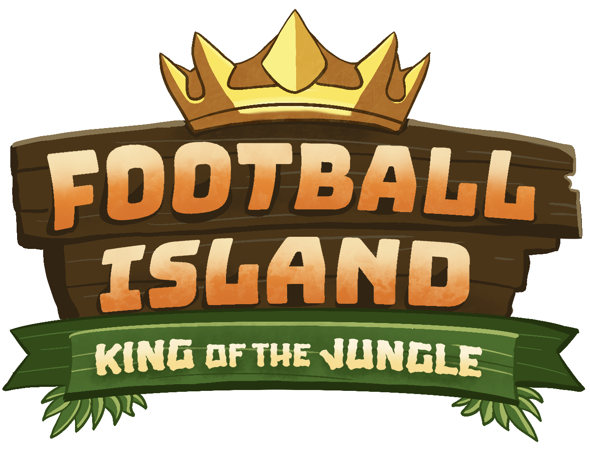
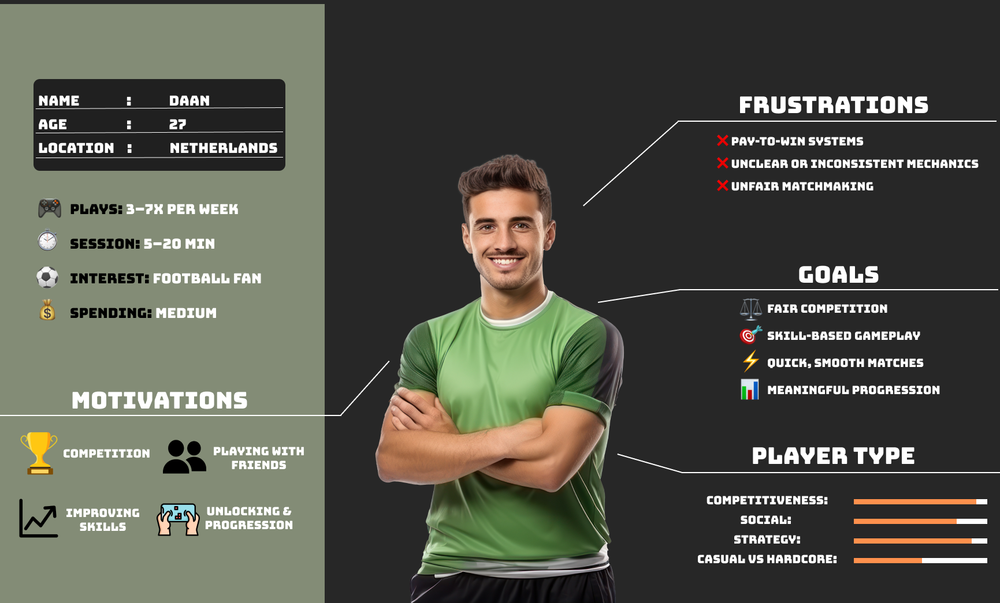
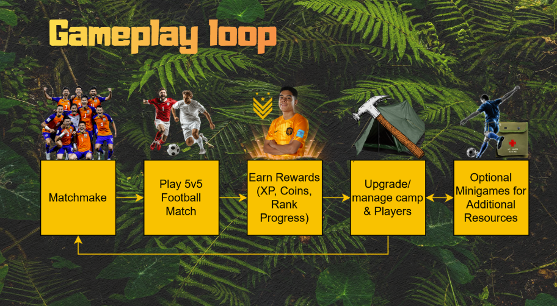

FOOTBALL ISLAND - KING OF THE JUNGLE
OVERVIEW
PROJECT PERIOD: 14.02.2026 - 26.03.2026
TEAM: 4 People


ABOUT THE PROJECT
In collaboration with Banijay , we were given the task of creating a concept of an interactive experience for their new reality series, Football Island. The goal was to attract a new audience to the show. My group came up with a concept for a mobile game. A big part of the project was researching our target audience and making design decisions based on what we learned about their interests and preferences.
CONCEPT
Our idea was a free-to-play competitive mobile football game inspired by the show's themes of competition, teamwork and elimination. Players compete in short football matches and various skill-based challenges, earning rewards and trying to stay in the competition. The idea was to recreate some of the pressure and rivalry from the show in a format that would appeal to mobile gamers. We also explored social features, such as competing with friends and climbing the rankings, to give players a reason to keep coming back.
